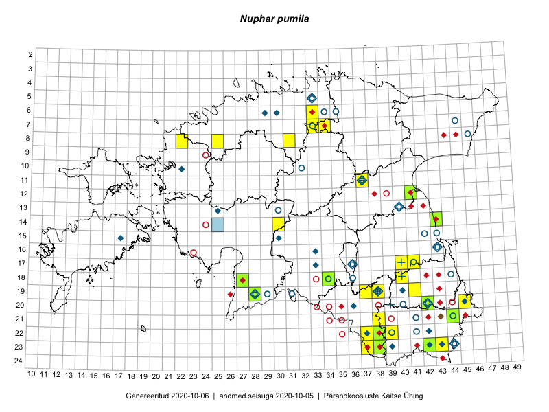

Nuphar pumila
Uuendatud: 2016-12-07
Kaardile koondatud taksonid: Nuphar pumila (Timm) DC.

Kaart põhineb 30 vaatlusel. Taime on leitud 16 ruudust.
| Ruut | Vaatleja(d) | Vaatlusaeg | Kirje tüüp | Viide andmebaasikirjele |
|---|---|---|---|---|
| 23-43 | Ott Luuk, Peedu Saar | 2015-08-12 | ruut/ala | vaata PlutoFis |
| 23-43 | Ott Luuk, Peedu Saar | 2015-08-12 | punkt | vaata PlutoFis |
| 21-44 | Tõnu Feldmann, Katrit Karus | 2015-07-28 | ruut/ala | vaata PlutoFis |
| 21-44 | Tõnu Feldmann, Katrit Karus | 2015-07-28 | punkt | vaata PlutoFis |
| 20-45 | Katrit Karus, Tõnu Feldmann | 2015-07-27 | ruut/ala | vaata PlutoFis |
| 07-34 | Katrit Karus, Tõnu Feldmann | 2015-08-07 | ruut/ala | vaata PlutoFis |
| 07-33 | Katrit Karus, Tõnu Feldmann | 2015-08-07 | ruut/ala | vaata PlutoFis |
| 07-33 | Katrit Karus, Tõnu Feldmann | 2015-07-29 | punkt | vaata PlutoFis |
| 07-33 | Katrit Karus, Tõnu Feldmann | 2015-08-07 | ruut/ala | vaata PlutoFis |
| 07-33 | Katrit Karus, Tõnu Feldmann | 2015-07-29 | punkt | vaata PlutoFis |
| 22-39 | Eeva-Maria Jeletsky, Tarmo Niitla | 2015-07-24 | punkt | vaata PlutoFis |
| 22-39 | Eeva-Maria Jeletsky, Tarmo Niitla | 2015-07-24 | punkt | vaata PlutoFis |
| 22-39 | Eeva-Maria Jeletsky, Tarmo Niitla | 2015-07-24 | ruut/ala | vaata PlutoFis |
| 23-37 | Eeva-Maria Jeletsky, Tarmo Niitla | 2015-07-16 | punkt | vaata PlutoFis |
| 23-37 | Eeva-Maria Jeletsky, Tarmo Niitla | 2015-07-16 | punkt | vaata PlutoFis |
| 23-37 | Eeva-Maria Jeletsky, Tarmo Niitla | 2015-07-16 | ruut/ala | vaata PlutoFis |
| 19-37 | Eeva-Maria Jeletsky, Tarmo Niitla | 2015-08-10 | punkt | vaata PlutoFis |
| 19-38 | Eeva-Maria Jeletsky, Tarmo Niitla | 2015-08-12 | punkt | vaata PlutoFis |
| 19-37 | Eeva-Maria Jeletsky, Tarmo Niitla | 2015-08-10 | ruut/ala | vaata PlutoFis |
| 19-38 | Eeva-Maria Jeletsky, Tarmo Niitla | 2015-08-12 | ruut/ala | vaata PlutoFis |
| 17-41 | Kadi Palmik, Helle Mäemets | 2015-07-24 | ruut/ala | vaata PlutoFis |
| 19-41 | Kadi Palmik, Helle Mäemets | 2015-08-13 | ruut/ala | vaata PlutoFis |
| 12-41 | Kadi Palmik, Helle Mäemets | 2015-07-24 | ruut/ala | vaata PlutoFis |
| 22-37 | Silvia Pihu | 2015-06-27 | ruut/ala | vaata PlutoFis |
| 22-37 | Silvia Pihu | 2015-06-27 | punkt | vaata PlutoFis |
| 18-27 | Peedu Saar, Ott Luuk | 2016-06-10 | ruut/ala | vaata PlutoFis |
| 06-33 | Peedu Saar, Toomas Kukk | 2016-09-14 | ruut/ala | vaata PlutoFis |
| 06-33 | Peedu Saar, Toomas Kukk | 2016-09-14 | punkt | vaata PlutoFis |
| 19-28 | Toivo Sepp, Liina Oja | 2016-07-19 | ruut/ala | vaata PlutoFis |
| 18-27 | Oliver Parrest, Elle Rajandu | 2016-07-19 | ruut/ala | vaata PlutoFis |